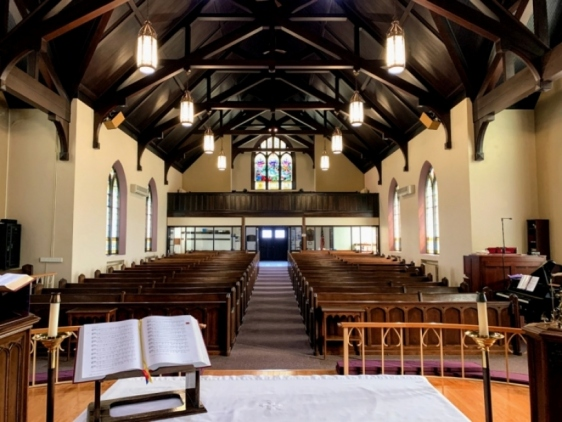
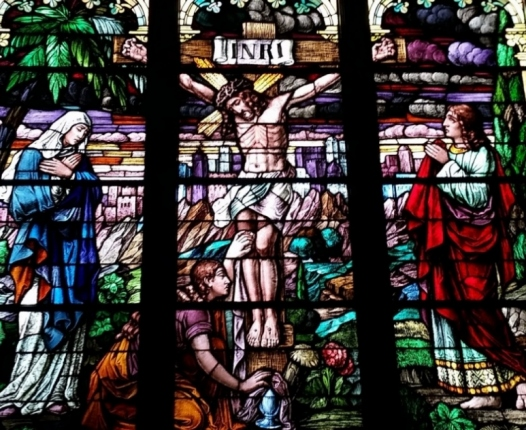
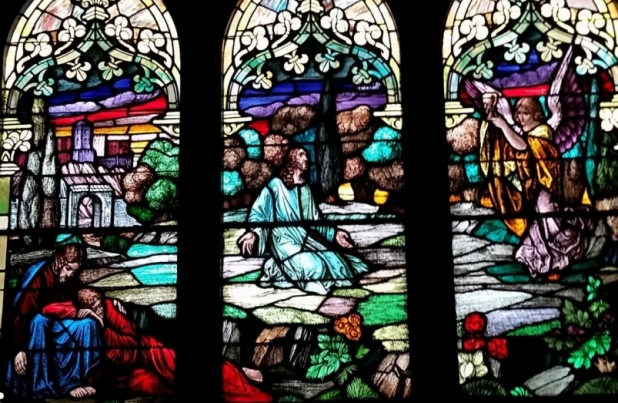
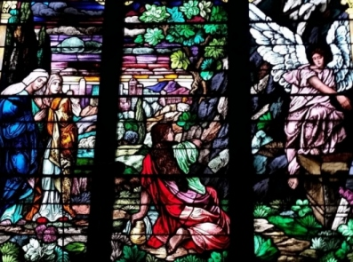

Welcome to Trinity
God's presence in the Ellwood City area.
Worship, study, and service in the heart of our community. Whoever you are, wherever you are on your journey, you are welcome here.
All are welcome to any of our services. Please see our calendar for a full list of times and events, and check the bulletin for weather-related changes.
Our Mission
Committed to being God's presence.
We are committed to being God's Presence in the Ellwood City area with a mission of evangelism and outreach that seeks to spread the Good News in Jesus Christ, inviting others to join us in the worship and work of our Lord.
We are committed to read, study, and meditate upon the Word of God. And through prayer and the Holy Spirit's guidance, we are empowered to respond to those in need.

Get Involved
Ministries & ways to connect



Our People
Staff & leadership
The Rev. David R. Saylor
Pastor
Pastor's office hours are flexible. He is usually in the office one or two mornings each week, and is glad to meet in person: just let him know.
Text or call 412.737.0405
Please text first if possible.
Staff
- Mr. David Spielvogle II
- Director of Music
- Mrs. Julia Gebhart
- Youth Choir Director
- Mrs. Cindy Rosaci
- Church Secretary
- Mr. Erik Nielsen
- Bookkeeper
Council Officers
- Denise Gerard
- President
- Barb Beachem
- Vice President
- Shariee Thalmann
- Treasurer
- Kathie Kiser
- Secretary
Team Captains
- Growing in Faith, Youth & Young Adults
- Steve Duran
- Growing Stewards & Dollars and Cents
- Denise Gerard
- Food & Fun
- Kim Hunter
- Shepherding
- Jessica Nardone
- Good Neighbor
- Matt Fleming
- Building & Grounds & Vision Refresh
- Tim Gebhart
- Word and Praise
- Barb Beachem
- Mutual Ministry
- Joscelyn Curcio
- Scholarship
- Kathie Kiser
- AV / IT
- Doug Slade
- WELCA
- Jessica Nardone, Barb Guenther & Janice Grudowski
Plan Your Visit
Come and see
If you are visiting the Ellwood City area, or if you do not have a church to call your home, we welcome you to join us for worship.
Address
Trinity Lutheran Church207 Spring Avenue
Ellwood City, PA 16117
Contact
Phone / Fax: 724-752-3050
(call before sending a fax)
Email: triquet2@zoominternet.net
Office Hours
Secretary: Tuesday, Wednesday & Thursday
9:00 a.m. – 3:00 p.m.
Support the work of Trinity
Your gifts help us worship, serve our neighbors, and share the Good News in Ellwood City.